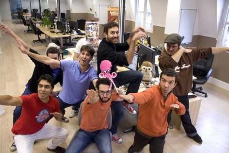

Motion twin
Motion Twin is an independent studio specializing in online video games. Founded in 2001, the company is a worker cooperative enterprise based in Bordeaux, France.
The company initially gained notice through the release of games such as "Hammerfest", "My Brute", "Mush", "Die2Nite", "Alphabounce" and the social game platform, "Twinoid", and now has a community of 15 million registered users.
All games developed by Motion Twin, with the exception of Dead Cells, can be accessed and played for free with some games including a premium option (subscriptions and items) which create revenue for the company. In 2009, the company had a turnover of 4 million euros.
Source: Wikipedia.
